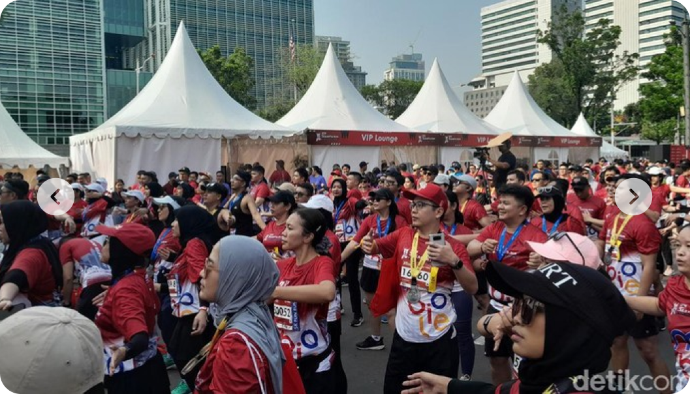

.png)
10K FUN RUN
Dimulai pukul 6 pagi, nikmati pemandangan kota di pagi hari dimulai dari Bundaran HI hingga Patung Pemuda Membangun di Senayan lalu kembali lagi ke Bundaran HI!
GRATIS DAN BERHADIAH
Pendaftaran gratis! Ajak keluarga anda dan menangkan hadiah total puluhan juta serta berbagai macam doorprize yang menarik!
50+ TENANT BAZAR
Dapatkan promo menarik pada booth-booth tenant bazzar Sudirman Run 2023 mulai dari F&B hingga fashion
.png)
SPECIAL PERFORMANCE
Saksikan penampilan dari RAN, DJ Whisnu Santika, DJ Adnan Veron, serta hiburan lainnya!
DIDUKUNG OLEH


GALERI SUDIRMAN RUN


.png)
.png)
.png)
.png)
.png)
.png)
ARTIKEL TERKAIT

.png)
.png)
[Artikel] Sukses Finish Marathon di Jakarta, Osha PenyandangAutisme Beberkan Prosesnya
[Artikel] Edukasi Lingkungan Hidup Bonus Sehat di 'Misi Lestari 2023: See Nature
[Artikel] Sukses Finish Marathon di Jakarta, Osha Penyandang Autisme Beberkan Prosesnya
Sabtu, 25 Nov 2023 20:00 WIB
Selasa, 28 Nov 2023 20:00 WIB
Minggu, 26 Nov 2023 20:00 WIB
.png)
.png)
.png)
[Artikel] Kelar Lari di CT Arsa Charity Fun Run, 'Recharge' Energi Nonton Maliq & D'essentials
[Artikel] CT Arsa Charity Fun Run 2023 Bertabur Emas
[Artikel] BTN Jakarta Run 2023 Dorong dan Geliatkan Sport Tourism Jakarta
Sabtu, 18 Nov 2023 20:00 WIB
Kamis, 16 Nov 2023 20:00 WIB
Minggu, 12 Nov 2023 20:00 WIB
[Foto] Sukses Finish Marathon di Jakarta, Osha PenyandangAutisme Beberkan Prosesnya
[Foto] Edukasi Lingkungan Hidup Bonus Sehat di 'Misi Lestari 2023: See Nature
[Foto] Sukses Finish Marathon di Jakarta, Osha Penyandang Autisme Beberkan Prosesnya
Sabtu, 25 Nov 2023 20:00 WIB
Selasa, 28 Nov 2023 20:00 WIB
Minggu, 26 Nov 2023 20:00 WIB
[Foto] Kelar Lari di CT Arsa Charity Fun Run, 'Recharge' Energi Nonton Maliq & D'essentials
[Foto] CT Arsa Charity Fun Run 2023 Bertabur Emas
[Foto] BTN Jakarta Run 2023 Dorong dan Geliatkan Sport Tourism Jakarta
Sabtu, 18 Nov 2023 20:00 WIB
Kamis, 16 Nov 2023 20:00 WIB
Minggu, 12 Nov 2023 20:00 WIB
[Video] Sukses Finish Marathon di Jakarta, Osha PenyandangAutisme Beberkan Prosesnya
[Video] Edukasi Lingkungan Hidup Bonus Sehat di 'Misi Lestari 2023: See Nature
[Video] Sukses Finish Marathon di Jakarta, Osha Penyandang Autisme Beberkan Prosesnya
Sabtu, 25 Nov 2023 20:00 WIB
Selasa, 28 Nov 2023 20:00 WIB
Minggu, 26 Nov 2023 20:00 WIB